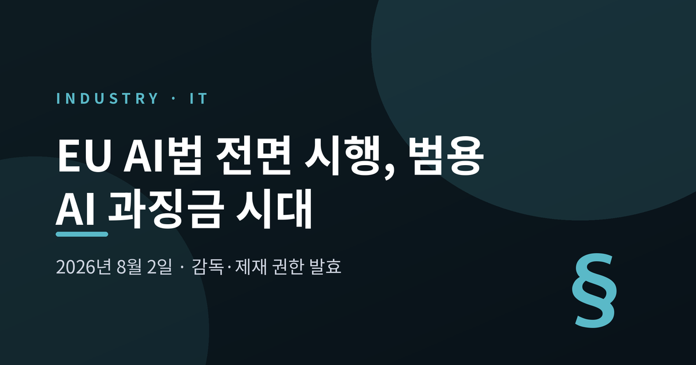
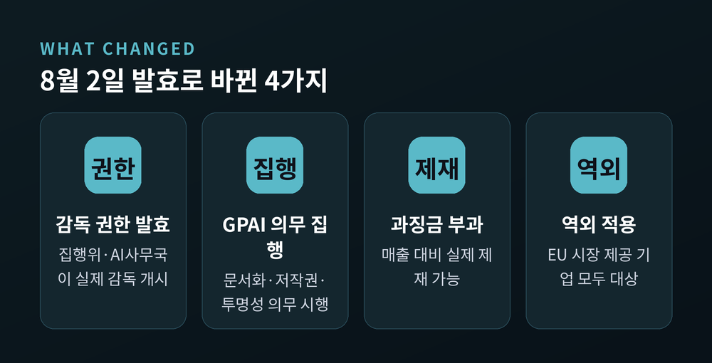
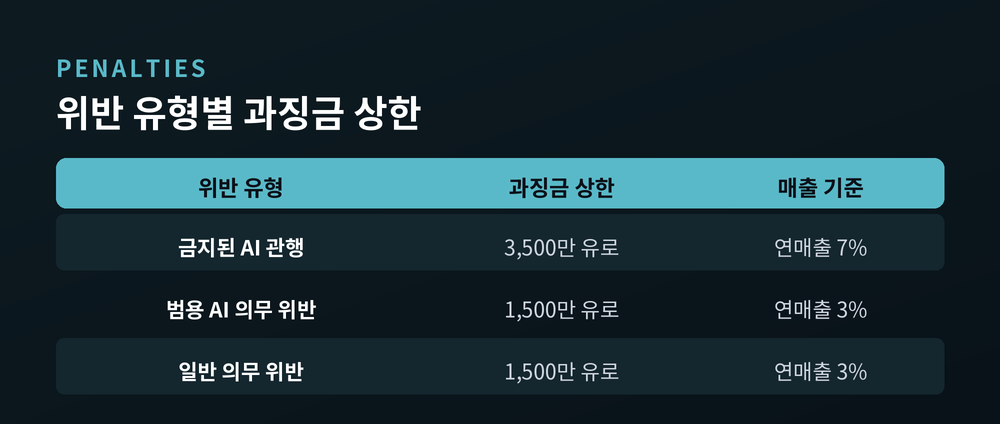
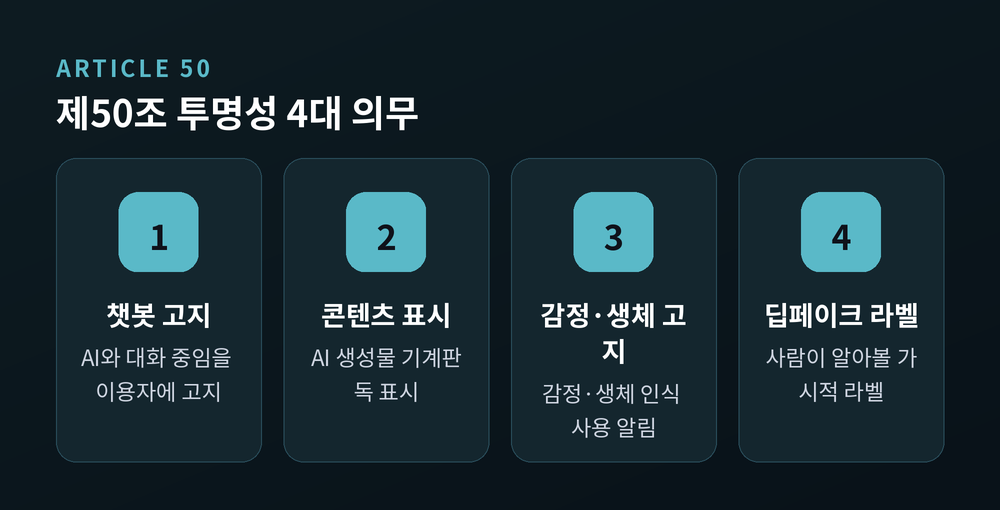
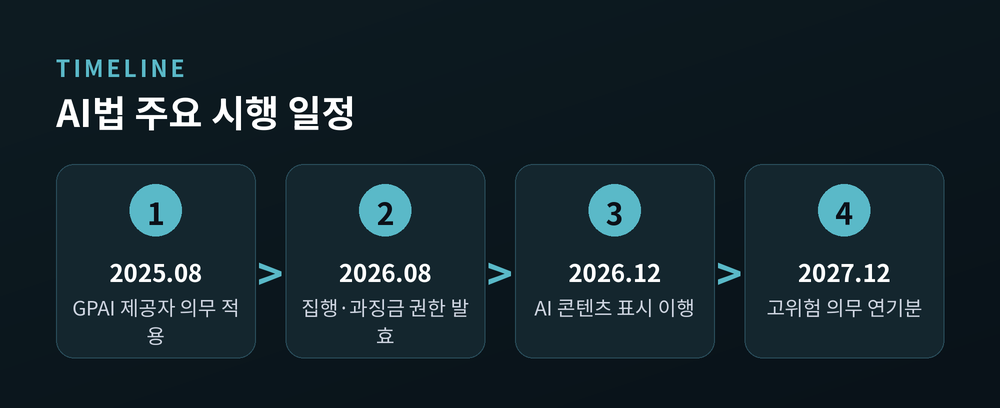
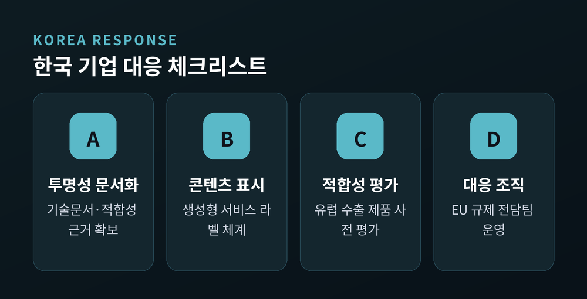

EU AI법 전면 시행, 범용 AI 과징금 시대 개막 — 무엇이 적용되고 한국 기업은 어떻게 대응하나

EU AI법(AI Act)이 2026년 8월 2일을 기점으로 새로운 국면에 들어섰습니다. 이번 글에서는 이날 실제로 무엇이 바뀌었는지, 위반하면 어떤 제재가 따르는지, 그리고 유럽 시장을 둔 한국 기업이 무엇을 준비해야 하는지를 차분히 정리해 보겠습니다.
핵심부터 말씀드리면, 규칙이 새로 생긴 것이 아니라 집행 권한이 켜진 것입니다. 그동안 종이 위에 있던 의무가, 이제 과징금이라는 이빨을 갖게 됐습니다.
8월 2일, 무슨 일이 일어났나
2026년 8월 2일부터 EU 집행위원회(European Commission)와 그 산하 AI사무국(AI Office)이 범용 AI(GPAI, general-purpose AI) 모델 제공자에 대한 감독·집행·제재 권한을 실제로 행사하게 됐습니다.
AI사무국이 쥐게 된 권한은 구체적입니다. 문서 제출 요구, 독립 전문가를 동원한 모델 기술 평가, 리스크 완화 조치 명령, EU 시장에서의 모델 제한·회수, 그리고 과징금 부과까지 가능합니다.
주의할 점이 하나 있습니다. GPAI 제공자의 의무 자체는 이미 2025년 8월 2일부터 적용돼 왔습니다. 다만 집행위의 처벌 권한은 사업자와 신설 AI사무국이 제도를 안착시키도록 딱 1년간 유예됐고, 그 유예가 이번에 끝난 것입니다.
예전에는 의무만 있고 벌칙은 잠들어 있었습니다. 지금은 그 벌칙이 깨어났습니다.
적용 대상은 본사가 어디에 있든 상관없습니다. EU 시장에 범용 AI 모델을 내놓는 모든 기업이 대상이며, OpenAI·구글·앤스로픽 같은 미국 기업도 예외가 아닙니다.

왜 중요한가 — '기준'을 만드는 규제
이 변화가 중요한 이유는 단순합니다. EU가 세계에서 가장 먼저 범용 AI에 실효적 감독 장치를 붙였기 때문입니다.
AI 패권 경쟁에서 미국은 시장으로, EU는 기준으로 승부한다는 말이 있습니다. 미국이 규제를 완화하며 속도를 내는 사이, EU는 지켜야 할 선을 먼저 그었습니다. 유럽 시장에 진출하려면 이 선을 넘지 않아야 합니다.
한 번 만들어진 기준은 국경을 넘습니다. 유럽을 겨냥한 글로벌 기업이 EU 규격에 맞춰 제품을 설계하면, 그 설계가 사실상 세계 표준이 되는 흐름이 반복돼 왔습니다. 개인정보보호 규정(GDPR)이 걸어온 길이 그 대표적인 사례입니다. 이번 AI법도 같은 경로를 밟을 가능성이 큽니다.
또 하나 눈여겨볼 대목은 집행의 실효성입니다. 감독 기구가 문서를 요구하고 모델을 직접 평가할 수 있다는 것은, 규제가 선언에 머물지 않고 현장을 파고든다는 뜻입니다. 기업 입장에서는 '무엇을 어떻게 문서로 남겼는가'가 곧 방어선이 됩니다.
위반하면 얼마를 무나 — 과징금 상한
가장 현실적인 질문은 결국 돈입니다. 위반 유형에 따라 상한이 다릅니다.
범용 AI 제공자가 의무를 위반하면 최대 전 세계 연매출의 3% 또는 1,500만 유로 중 큰 금액이 부과됩니다. 근거는 AI법 제101조입니다.
가장 무거운 제재는 금지된 AI 관행(제5조) 위반입니다. 이 경우 최대 3,500만 유로 또는 전 세계 연매출의 7% 중 큰 금액까지 올라갑니다. 매출의 7%라는 숫자는 결코 가볍지 않습니다.

실제로 무엇이 적용되나 — 두 갈래로 나눠 봅니다
적용되는 의무는 크게 두 갈래입니다.
첫째, 범용 AI 제공자 의무입니다. 기술 문서화, 저작권 정책, 학습 데이터 요약 공개가 기본입니다. 여기에 더해, 학습 연산량이 10의 25제곱(10^25) 플롭스를 넘거나 집행위가 특별히 영향력이 크다고 지정한 모델은 '시스템적 위험(systemic risk)' 등급으로 분류됩니다. 이 등급은 적대적 테스트, 모델 평가, 중대사고 보고, 사이버보안 확보 의무를 추가로 집니다.
둘째, 제50조(Article 50) 투명성 의무입니다. 이쪽은 범용 AI와 별개로, 특정 AI 시스템을 제공하거나 배포하는 쪽에 적용됩니다. 챗봇처럼 사람과 상호작용하는 시스템은 AI와 대화 중임을 알려야 합니다. AI가 만든 콘텐츠에는 기계가 읽을 수 있는 표시를 붙여야 합니다. 딥페이크에는 사람이 탐지 도구 없이도 알아볼 수 있는 라벨을 달아야 합니다.
집행위는 고지 기준을 꽤 엄격하게 못 박았습니다. 약관에 한 줄 넣는 것으로는 부족합니다. 워터마크 같은 기술적 표시만으로도 안 됩니다. '어시스턴트' 같은 모호한 표현도 미달입니다. 눈에 잘 띄는 평이한 안내와 시각·청각 신호를 함께 써야 한다는 것입니다.
다만 시점에는 결이 다른 정보가 있습니다. 제50조 의무는 원문상 8월 2일 적용으로 설계됐지만, 개정 논의(디지털 옴니버스) 과정에서 AI 생성 콘텐츠 워터마킹 등 일부 세부 의무의 이행 기한이 2026년 12월 2일로 조정됐다는 국내 보도도 있습니다. 큰 틀은 8월에 열렸고, 세부 표시는 연말까지 시간을 벌었다고 이해하는 편이 안전합니다.

하나 더 — 고위험 규제는 오히려 연기됐다
혼동하기 쉬운 대목입니다. 이번에 모든 것이 강해진 것은 아닙니다.
2026년 디지털 옴니버스 합의로 고위험(high-risk) AI 의무의 적용은 뒤로 밀렸습니다. 부속서 III의 독립형 고위험 시스템은 원래 2026년 8월에서 2027년 12월 2일로, 규제 제품에 내장된 AI는 2028년 8월 2일로 연기됐습니다. 이를 뒷받침할 기술 표준과 컴플라이언스 도구가 아직 준비되지 않았다는 이유에서입니다.
그럼에도 범용 AI 집행 권한과 대부분의 투명성 의무는 예정대로 8월 2일에 발효됐습니다. "8월 2일은 여전히 유효하다." 여러 법무법인이 공통으로 낸 메시지입니다.

한국 기업에는 어떤 영향이 오나
국내 진단은 비교적 차분합니다. 한국은 이미 AI기본법을 전면 시행 중이라 추가 충격은 제한적이라는 것입니다. 다만 유럽에 AI 제품·서비스를 수출하는 기업이라면 이야기가 달라집니다.
삼성전자와 LG전자는 유럽 수출용 온디바이스 AI 가전의 마케팅과 표기를 재정비하며 투명성 표기를 선제적으로 적용하고 있습니다. 네이버를 비롯해 유럽 비중이 큰 기업들은 이미 EU 규제 대응 전담 조직을 꾸렸습니다.
실무의 무게는 결국 문서와 표시에 실립니다. 유럽에 무언가를 판다면 적합성 평가와 투명성 문서화를 갖춰야 하고, 생성형 기능이 들어간 서비스라면 콘텐츠 표시 체계를 미리 정비해 두어야 합니다.
물론 아직 완벽한 대응은 아닙니다. 워터마킹 기술은 규제 요구를 완전히 따라가지 못하고, 세부 기준은 여전히 다듬어지는 중입니다. 그럼에도 준비를 미룰 이유는 없어 보입니다.

정리하면 이렇습니다. 이번 8월 2일은 규칙이 새로 태어난 날이 아니라, 잠들어 있던 규칙이 집행이라는 힘을 얻은 날입니다.
"기준을 먼저 세운 쪽이 시장을 설계한다." 유럽이 그은 선은 결국 유럽 밖 기업의 책상 위로 옮겨옵니다.
준비된 기업에게 규제는 진입 장벽이지만, 준비되지 않은 기업에게는 퇴장 명령이 될 수 있습니다. 그 갈림길이 지금 열렸습니다.